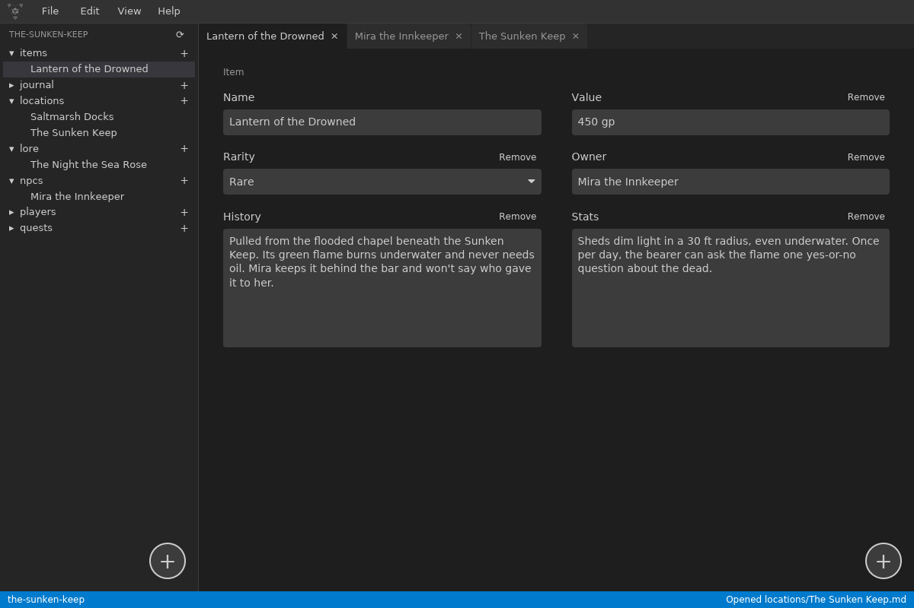
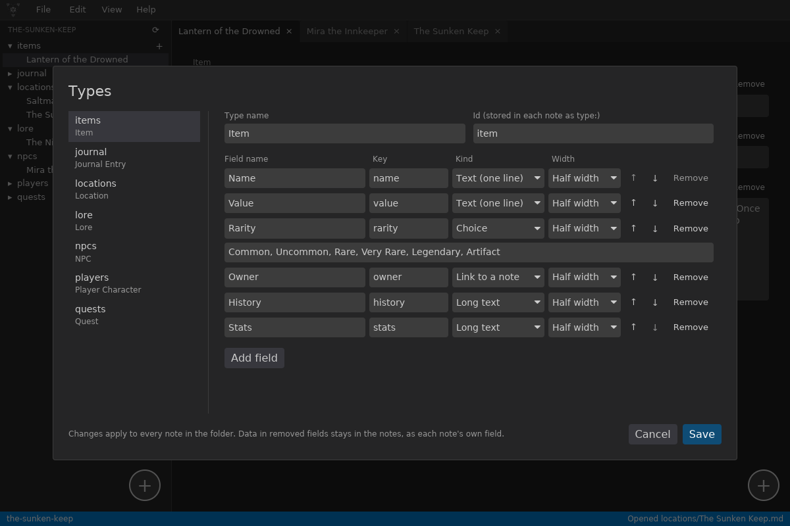
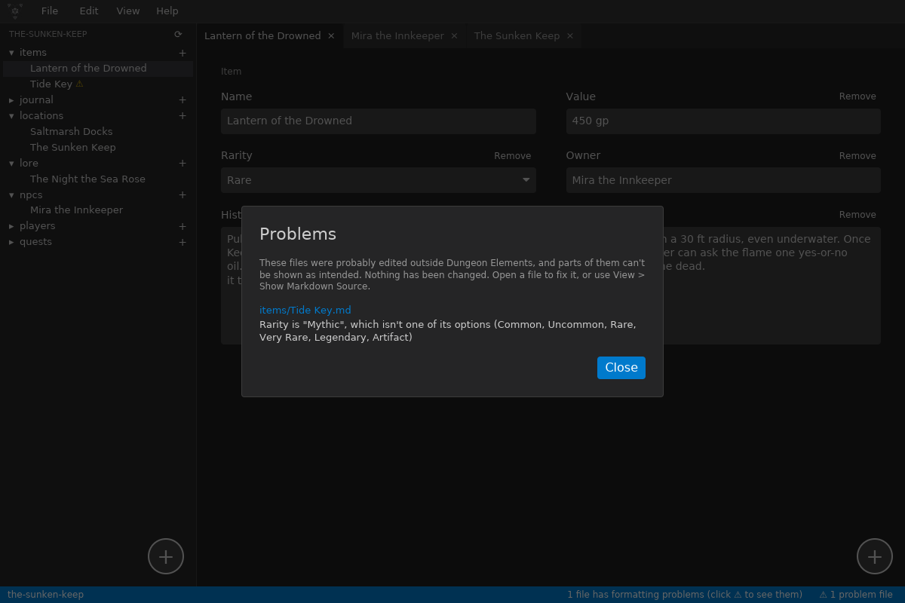
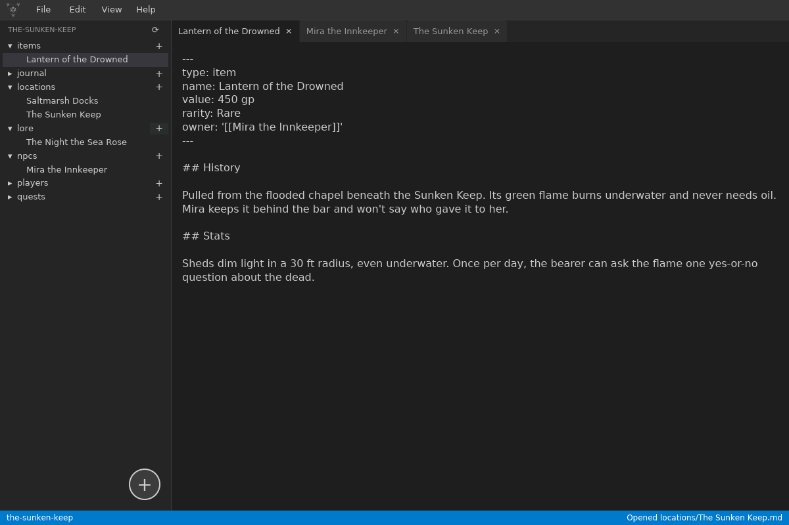

The Problem
Game masters pour years into their campaigns: NPCs, locations, quests, lore, and session notes. Most campaign tools keep that work in a proprietary format on someone else's server, so it lasts only as long as the service does. Plain text files last forever, but a folder of loose notes has no structure and no checks.
Dungeon Elements gives you both. A campaign is just a folder, and every note is a Markdown file with YAML front matter that Obsidian and any text editor can read. On top of that, each folder can define the fields its notes have, so an NPC opens as a form with a role, a location, and a disposition, and the app checks every file for anything it can't show as intended.
Solo project: design, code, logo, and releases
Rust 2024 • iced 0.14 • serde • YAML • resvg • GitHub Actions
Early development, version 0.1.0 (October 2026)
Windows, Linux, and macOS (universal). No accounts, no cloud.
How a Note Works
The core idea is that the form and the file are two views of the same note. Nothing about a note lives anywhere except in its own Markdown file.
A folder declares a type
A _type.yaml in a folder lists the fields its notes have: text, numbers, choices, tags, [[links]] to other notes, checkboxes, or long text. New campaigns get a starter set for items, NPCs, locations, quests, lore, players, and a journal.
The note opens as a form
The parser splits the file into front matter and ## sections. Short fields come from the front matter and long text from the sections, the same layout Obsidian uses. A note can add or drop fields of its own without changing the folder's type.
Saving writes plain Markdown
Saving turns the form back into YAML front matter and Markdown sections, keeping keys the form doesn't know about. One shortcut (Ctrl+E) shows the raw file, so there's never any hidden state.
Design decisions worth calling out
- The user's files are the source of truth. There is no database or cache to fall out of sync. If someone stops using the app, their campaign comes with them, untouched.
- Check, never repair. Opening a campaign checks every note and type file: broken front matter, a word in a number field, a choice that isn't an option, repeated sections, unknown types. Problems get a ⚠ and a plain-English explanation, but nothing is changed for the user.
- Edits from other apps are expected. When the window regains focus, the app compares each open file's modified time with the version it loaded. Clean tabs reload; tabs with unsaved changes ask which version to keep, and saving never silently overwrites an outside edit.
- Fail soft. A broken user theme file is skipped with a warning, and a note the form can't read opens as its Markdown source instead. The app should never crash on a file the user wrote.
The App

Types dialog: campaign folders on the left, and the Item type's fields on the right with their key, kind, width, and options" loading="lazy">
The interface is built with iced, a native Rust GUI library that follows the Elm architecture: all state lives in one model, every input is a message, and the view is a pure function of the state. That made features like tabs, unsaved-change prompts, and reloading files on focus predictable to add.
Every color comes from a YAML theme with named roles like sidebar, tabs, fields, and accent. Dark and High Contrast ship with the app, users can drop their own theme files in a config folder, and any color a theme leaves out falls back to its base. The logo is an SVG recolored to match the theme.
The app ships as a single file: themes, templates, and the logo are compiled in. The release build uses link-time optimization and is stripped, and a GitHub Actions workflow builds the universal macOS app on Apple's runners and merges the Apple silicon and Intel builds with lipo.

Engineering Choices
Why Rust
A campaign manager holds years of someone's creative work, so stability matters more than anything. Rust gives a fast native app with no runtime to install, and its type system catches whole classes of bugs before they reach a user's files.
Small, focused modules
Parsing notes, content types, the form, file checks, themes, and the campaign tree each live in their own module, with unit tests on the parts that touch files, like front matter parsing, content types, and the file checker.
Interoperable by design
Notes use the same front matter and [[link]] format as Obsidian, and tags are stored as a YAML list so Obsidian reads them as tags. Users can switch between the two tools freely.
Planned and documented
The work follows a phased plan with checklists, every release is recorded in a Keep a Changelog file with semantic versions, and a release guide covers packaging for all three platforms.
What's Next
Version 0.1.0 finishes Phase 0, Call to Action: the app, campaigns, typed notes, file checks, themes, and releases for three platforms. Phase 1 turns the notes into a connected wiki of the world, and Phase 2 adds drawing and generator tools for building it.
- Rendered Markdown with live preview
- Clickable
[[links]]that survive renames - Highlight a name and choose "Add link" to create a page
- A built-in dice roller
- A basic SVG map editor
- Name and roll table generators